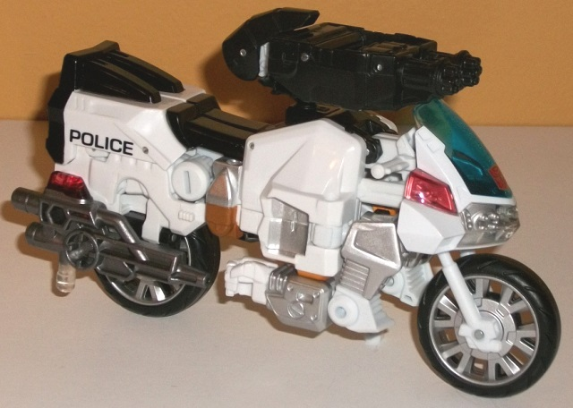
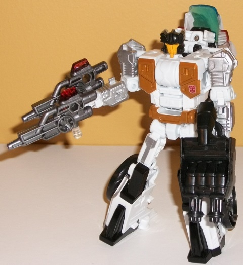
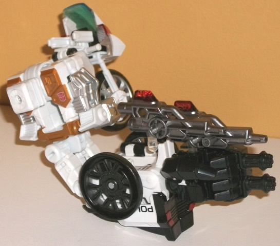
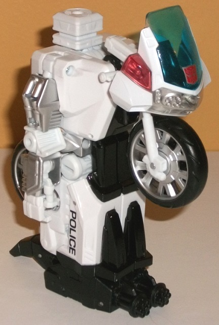

Allegiance
: Autobot
Size
: Deluxe
Difficulty of Transformation to Robot:
Easy
Difficulty of Transformation to Leg
:
Very Easy
Difficulty of Transformation to Arm
:
Easy
Color Scheme
: White, black, and
some silver, moderately dull red, clear plastic, dull mustard gold, transparent
blue, transparent pale red, orangish yellow, dark gunmetal gray, and transparent
yellow
Rating
: 8.9


TakaraTOMY took the
initiative in creating a deluxe-sized Combiner Wars Groove to complete
the "traditional" Protectobots team in terms of limb placement (as opposed
to Hasbro's
initial Legends size toy
, which
took scale into consideration a bit more). As an exclusive online release,
Hasbro decided, "Why not?", and released the mold stateside as well. In
vehicle mode, Groove is a police motorcycle, and by and large has pretty
good proportions, looking like the same general motorcycle Groove was in
G1, but modernized a bit (and of course, enlarged to deluxe size). The
windshield might be just a TAD undersized, but that's about it as far as
prportional maladies go. There are two VERY obvious robot extras, though--
I mean, the arms are just hanging down under the front section of this
mode. They connect via tabs to keep them in place, but no real attempt
is made to hide them, which is unfortunate given how nice the rest of the
mode looks. Groove's color scheme is mostly white and black-- certainly
an acceptable and realistic color scheme for a police motorcycle. His hand/foot/gun
accessory is also black, with some neat "rotary machine gun" details on
the front. It plugs in only on top of the front section of this mode, so
it looks "off" a bit in terms of where it's located, but otherwise it looks
pretty good. By itself, a white/black color scheme would be pretty boring,
but there's a lot of paint apps on Groove to keep any large area from looking
boring. He's got silver on the upper and lower arms, on the wheel hubs,
in the middle of the "bulk" of the vehicle, and a few other minor areas;
a nice metallic gunmetal gray on his rear-mounted guns, red taillights,
and "POLICE" symbols near the back end. The best parts about this mode
are the various colored transparent plastics; the blue windshield looks
pretty good, and there's a VERY well-molded, detailed headlight setup painted
in silver underneath the front, which has a clear plastic "shield" in front
of it. There's also some detailing behind the transparent pale red lights
on the sides of the windshield, and that same red on the top of the guns
as well. The mold detailing is pretty decent on the robot arms, wheels,
and aforementioned headlights, but it's otherwise fairly basic-- which
is approporiate, given it's supposed to be a rather smooth motorcycle.
Of one last note is that a kickstand piece flips down from the bottom of
one of the lower arms, so Groove can stand up by himself in this mode somewhat
stably.
Groove's transformation
to robot mode is pretty familiar to those who already have a fair number
of Combiner Wars molds (especially the jets). The back end folds out and
splits apart to become the robot legs, the arms fold out from the sides,
and the front part of the vehicle mode folds back behind the upper back.
It's pretty simple, but effective. Groove's proportions in this mode are
also pretty solid, with arms and legs that look pretty well-proportioned
from any angle, and the back wheel folded into two halves that stick on
the sides of the lower legs pretty firmly. My only complaint in this mode
regarding kibble is the motorcycle windshield and front wheel on his upper
back; it sticks out behind his body quite a bit and looks odd from a side
view, though you can fold in the wheel a bit so it doesn't stick out QUITE
as much. At least it doesn't get in the way of movement, though. In this
mode, a dull mustard gold is added to the color scheme-- on Groove's chest
and waist in particular, with some rather square, angular details on his
otherwise flat chest. I'm not fond of the "mustard" tint; I think a straightforward
metallic gold would've looked much nicer. There's also some silver paint
apps on the upper legs, and a well-detailed headsculpt with a black "helmet"
and a yellow-orange face with some nice transparent yellow light piping
for eyes (this version goes for seperate eyes compared to the Legends class'
visor). The various vent details on the arms also add a bit more to this
mode in terms of mold detailing than was visible in motorcycle mode. Groove
has the problem(?) of having three weapons but only two hands to hold them
in; thankfully, the two side guns can plug into each other, albeit not
in a way that allows them to stay "level" with each other-- one's always
going to be down and to the front of the other, but it's better than no
weapon combination. For articulation, Groove can move at the neck, shoulders
(at two points), elbows (at two points), waist rotation, and movement at
the hips (at two points) and knees. Thus, he can get into a pretty good
number of poses, though the elbow ratchets are a bit shallow and those
joints a little loose-- this appears to be a widespread problem, unfortunately,
though they're not outright floppy.


Like pretty much every
Combiner Wars deluxe, Groove's arm mode is fairly close to his robot mode,
with the legs pegged together and the hand/foot/gun accessory plugged in
to form the lower arm while the shoulder is formed by the robot chest,
with the robot head rotated out of the way in favor of the combiner port.
The front of the motorcycle mode sticks out fairly obviously from the side
of the shoulder, but it doesn't stick out a ton and feels like an "acceptable"
amount of vehicle kibble to me-- I mean, it's not like you can hide ALL
of that stuff in a figure with four modes. The robot arms are an issue
here, though-- they slide down against the body from their robot mode position,
but just stick out from the sides of the shoulder in a somewhat unpleasant
manner. Plus, there's nothing for the lower robot arms to peg into, so
they can slouch down a bit if your Groove's elbow joints are a bit weak.
The instructions recommend leaving the wheel halves on the sides of the
lower arm (as I have in the picture above), but I personally like combining
the wheels in the middle of the lower arm to give it a bit more "bulk"
without a deep curved hole in the middle. As with pretty much all CW deluxes,
in this mode Groove can move at the shoulder (at two points), elbow (at
two or three points, depending on whether the robot knees are facing forward
or not), wrist, thumb (at two points), and at the base of his four fingers
(all moving as one joint).
Groove's leg mode is
his motorcycle mode with the front flipped up and around and the combiner
peg flipped out, while the robot arms are folded down into the same slot
that they fit in for the combiner arm mode. It makes for a pretty solid-looking
block of a leg, with the motorcycle front making for a pretty good "kneecap".
That said, once again... those darned robot arms are really obvious on
the sides of this mode. At least this time they actually peg into the sides
to keep them from moving around, though. Like all CW deluxe legs, Groove
can move in this mode at the knee joint at two points, and he can rotate
at the foot.
Although not quite the
creme de la creme of the Combiner Wars deluxes, Groove is still a pretty
good above-average deluxe for the line, with a good number of paint apps,
an excellent robot mode, and pretty solid vehicle, leg, and arm modes.
If it wasn't only for those darned obvious arms in every mode, he's be
about as good as I could reasonably expect. If you don't care about scale
and want a limb-sized Groove for your Protectobots, I highly recommmend
this toy.
Review by Beastbot